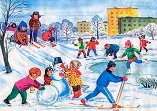

Летние каникулы
Мне очень нравятся летние каникулы! Пришло время отдыхать, веселиться и путешествовать.
Этим летом я много гулял с друзьями во дворе и в парке. Мы играли с мячом, прыгали и катались на роликовых коньках. Поскольку лето было очень жарким, мы отправились на реку и каждый вечер плавали с мамой, папой и маленькой сестрой.
К счастью, у меня было достаточно времени для моего любимого занятия - чтения. Я даже взял с собой несколько книг, когда я отправился на побережье с моей бабушкой. И когда я вернулся домой из своего отпуска, в моей комнате был подарок - новый велосипед! Вы не можете себе представить, как долго я об этом мечтал!
Лето - волшебное время, и все мои мечты сбылись этим летом!
Холодная, волшебная зима

Зимние каникулы
Утром, пока первый снег еще весело хрустел под подошвой впервые прошедших ног, а тонкая корочка льда на лужах еще не была сбита дворовыми мальчишками, я выбегал на улицу, едва застегнув куртку и с натянутой лишь на одно ухо шапкой, с заливистым снегом падая в первый же сугроб, оскользнувшись на свежем льду, отряхиваясь от колющей мерзлоты и вновь падая вниз.
Чтобы откопать санки, нужно было очистить дорожки, а до лопаты было идти далеко и скучно, поэтому я резвился в белых волнах подобно неповоротливому киту, переворачиваясь с боку на бок и погружаясь в глубь по самую грудь.
А после такого, снег оседал на куртке, таял и я ходил, как одна сплошная, но довольная лужа, пока это не замечали родители и под взволнованные возгласы Матушки Отец не затаскивал меня домой.
Никто не ругался. Все понимали и часто рассказывали, отогревая меня у обогревателя с тарелкой горячего бульона, как сами в детстве любили резвиться в особенно солнечные дни, а приходить домой лишь в тот момент, когда дальше собственного носа из-за мрака увидеть ничего нельзя было.
Холодные и замерзшие, они приходили домой, как и я.
Теплое, красочное лето
Ободов Павел Андреевич©